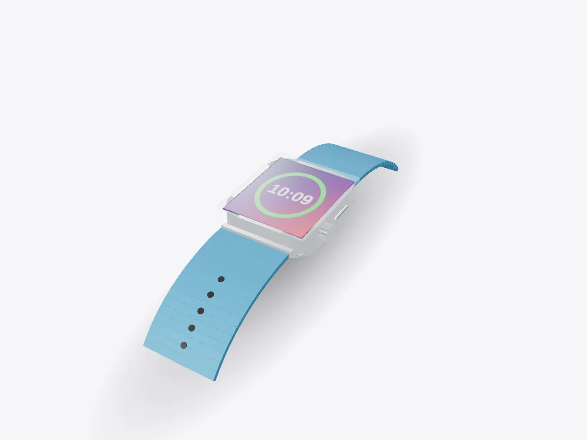

01 / 05
Overview
10 parts, one idea.
Explore a smartwatch in 3D: display, battery, heart-rate sensors, crown, haptics and band. Peel it apart and learn how green LEDs measure your pulse.
Drag to orbit, pinch or scroll to zoom, tap any part.
How it works · Tech
A phone's worth of ideas in a case about 4 cm across: a display, a battery, a radio and sensors that read your pulse through your skin.

Scores are saved on this device only.
01 / 05
Overview
Explore a smartwatch in 3D: display, battery, heart-rate sensors, crown, haptics and band. Peel it apart and learn how green LEDs measure your pulse.
Drag to orbit, pinch or scroll to zoom, tap any part.
02 / 05
Explode
Keep scrolling and every part slides away from the centre, so you can see how they fit together.
03 / 05
Slice
A section plane sweeps through the model as you scroll. Pick an axis and set the depth yourself.
04 / 05
Parts
Pick a part or tap a glowing dot. It lights up and everything else fades back.
05 / 05
Facts
Blood absorbs green light, so pulses of blood show up as dips in reflected light.
Optical heart sensing is called photoplethysmography.
Sapphire crystal is second only to diamond for hardness.
Explained
A smartwatch packs a small computer, a display, radios and a set of health sensors into a sealed case on your wrist. The layout is a stack. The crystal and display are on top, then the electronics and battery, and the sensor window sits on the back against your skin. The crown and side button poke through the case wall with seals around their shafts. This model is generic and unbranded.
Everything is designed around a tiny battery. The display can drop to a very low refresh rate, the processor sleeps between tasks, and sensors take readings in short bursts rather than all the time. That is how a watch can last a day or more on a battery that holds a small fraction of a phone's energy.
The green lights on the back are the heart-rate sensor. The method is called photoplethysmography, or PPG. Blood is red because it reflects red light and absorbs green light. Each time your heart beats, a pulse of blood swells the tiny vessels in your wrist, so a little more green light is absorbed and a little less comes back to the photodiodes. Counting those dips gives your pulse.
Movement creates noise in the signal, so the watch also uses its accelerometer to tell a heartbeat from the jolt of a footstep. Many watches add infrared light for overnight readings and electrodes for other measurements, but the basic idea stays the same: measure light, find the rhythm.
The digital crown is a rotary encoder. As you turn it, a sensor counts tiny steps of rotation and the software turns them into scrolling or zooming, so your finger never covers the small screen. The haptic motor is a linear actuator that shakes a small weight to tap your wrist, which is subtle enough to feel without anyone else noticing.
The band slides into rails cut into the case. It matters more than it looks: a band that is too loose lets light leak in around the sensor and makes heart readings less reliable. Explode the model to see every part, or open Play to remove the layers in the order a repair would follow.
D3DDD
D3DDD makes them: product cutaways, exploded views, architectural renders and technical drawings.